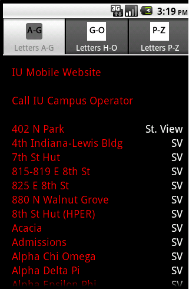
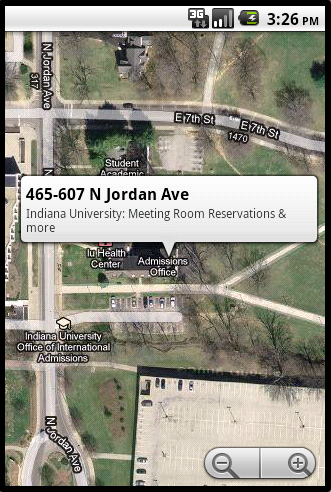
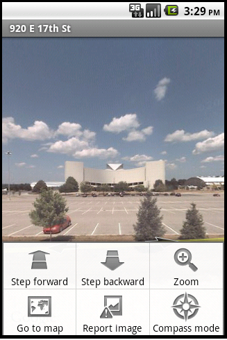
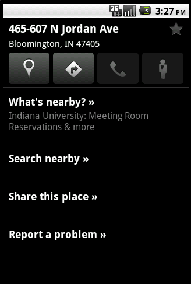

IU Building Locator V1
While I am an employee of Indiana University, this application is NOT supported/endorsed/affiliated with Indiana University in any way. I built this app in my spare time and I make it available free of charge for download. Since there is no cost please give me feedback via the Android Market. It only takes a couple of minutes and you got a free app out of the deal. Let me know of any issues with the app or if there are locations/features you would like included. Please include your phone model and any other appropriate details. mapper222@gmail.com
Attention Bloomington area business owners:
I can include your business in the locator app! Any existing users will be notified updates are available. It could feature one touch to dial, one touch to website, address, street view, navigation, directions etc. This is a great way to get the attention of students on the most used operating system of mobile phones! I will also consider application development opportunities. Contact me at the email above for details.
Instructions
The IU building app is touch driven and requires no typing. It fully integrates itself with Google Maps on your mobile phone. It offers one touch locational information for many IU Bloomington buildings. By using the existing functionality within the google maps app and gps enabled phones, you can get directions or voice activated navigation instructions to the locations in the app with just a few screen touches.
I have also included the IU Mobile website as a one touch. This website has the look and feel of an app, but is browser based. It includes Oncourse access, a Faculty, Student, and Staff directory, Campus alerts etc. And just in case you cant find what you are looking for, a one touch dial option for the campus operator is included.
One touch street views are available for most locations (some buildings are not near streets). This is a great way to tour the campus from anywhere or see where your next class/meeting is.

Requirements:
This app requires that the google maps app be installed on the mobile phone. If it is not already installed, it can be found at the Android Market also as a free download.
I have tested on the Droid, Droid X, and Droid Incredible. It should work on other hardware using Android OS and is compatible with Android OS 2.1 and 2.2 (Froyo)